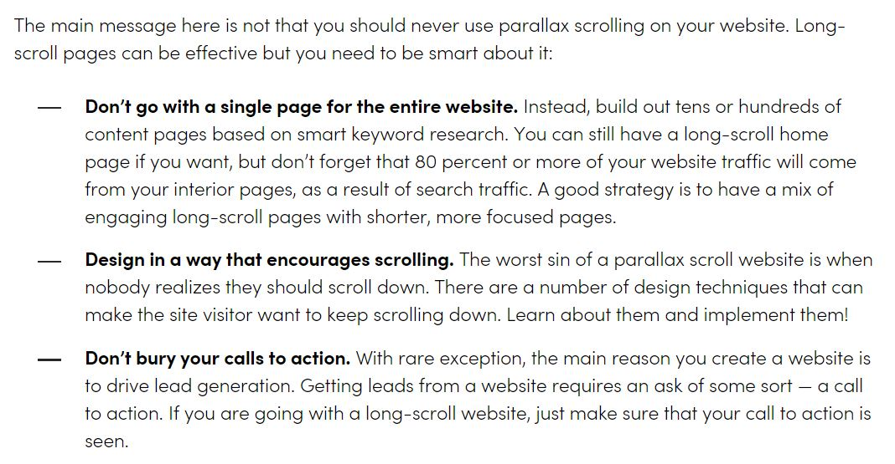

A parallax scroll effect is something I'd like to create, but I'm not sure what the best way is to implement it. I found this article to be extremely helpful: "The Problem With Long-Scroll, Single Page Websites" by Walker Sands Digital.
In order to follow the advice of this article (point #1), I decided to only have one page on my website with parallax scroll. I think the Bio is the best page for this, because I wanted to use something other than a grid to display the information, and I think a summarized "life story" is the perfect thing to encourage readers to scroll to the bottom of the page (point #2).
The most significant "call to action" for users viewing the site are the social media links for J. Black to gain more social media followers. Rather than leave the links at the bottom of this one page (as I had done in the original site), I decided to add his social media links up onto the right side of the navbar as well. This way, his links will be one of the first things that users can see on every web page.